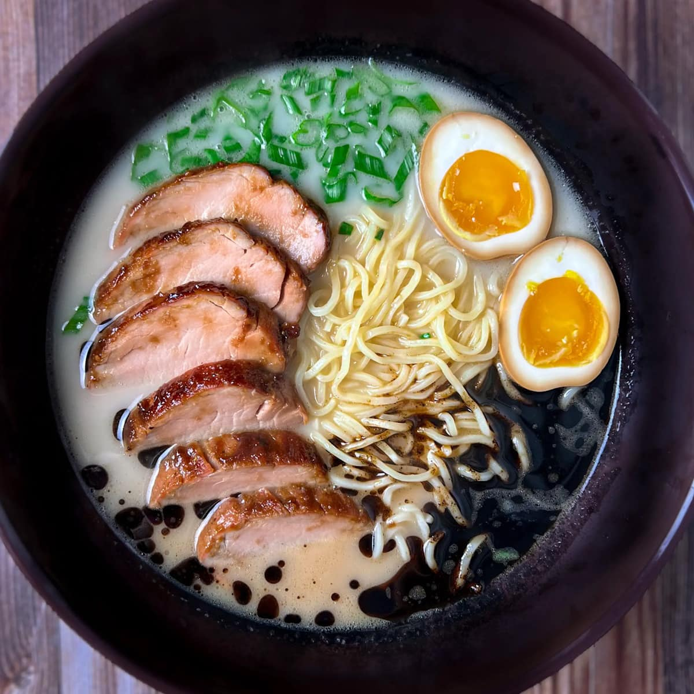
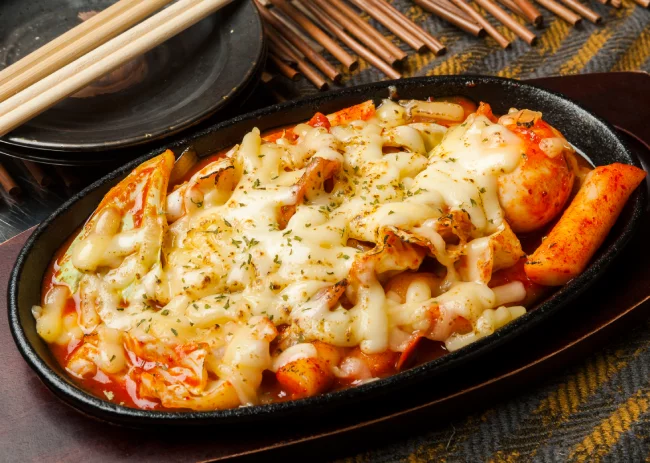
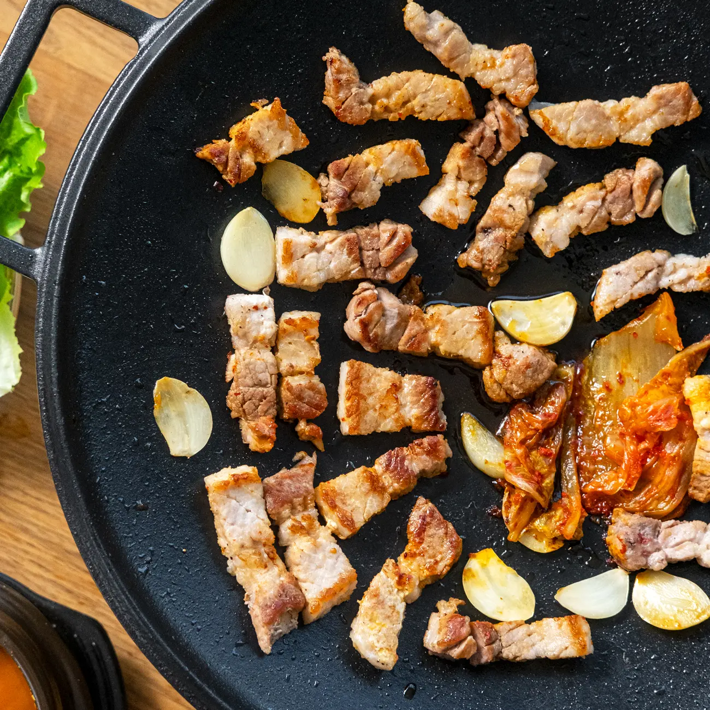

A popular instant noodle soup with a flavorful broth,
often topped with an egg, vegetables, and meat.
It's a quick and satisfying meal that's enjoyed by people of all ages.

| Nutrient | Amount per serving |
|---|---|
| Total Fat: | 16g |
| Saturated Fat: | 8g |
| Cholesterol: | 0g |
| Sodium | 2,036mg |
| Potassium | 179g |
| Total Carbohydrate | 63g |
| Dietary fiber | 2.3g |
| Sugar | 1.6g |
| Protein | 10g |
Spicy, chewy rice cakes
simmered in a sweet and spicy sauce.
It's a popular
street food and a favorite among Koreans.

| Nutrient | Amount per serving |
|---|---|
| Total Fat: | 12g |
| Saturated Fat: | 2.2g |
| Trans Fat: | 0.1g |
| Polyunsaturated Fat | 4.9g |
| Monounsaturated Fat | 3.5g |
| Cholesterol | 174mg |
| Salt | 6.3g |
| Total Carbohydrates | 102g |
| Dietary Fiber | 3.3g |
| Sugars | 20g |
| Protein | 20g |
A rolled seaweed rice dish filled with
various ingredients like vegetables, fish cakes, and meat.
It's a convenient and portable
meal that's perfect for a picnic or lunchbox.
| Nutrient | Amount per serving |
|---|---|
| Total Fat | 18g |
| Saturated Fat | 4.2g |
| Trans Fat | 0.1g |
| Polyunsaturated Fat | 5.6g |
| Monounsaturated Fat | 7g |
| Cholesterol | 132mg |
| Sodium | 1059mg |
| Total Carbohydrates | 51g |
| Dietary Fiber | 1.7g |
| Sugars | 12g |
| Protein | 17g |
| Potassium: | 567.5mg |
A deep-fried hot dog coated in a crispy corn batter.
It's a popular street food
that's often served with a variety of dipping sauces.
| Nutrient | Amount per serving |
|---|---|
| Total Fat: | 11 g |
| Saturated Fat: | 2.9 g |
| Cholesterol: | 45 mg |
| Sodium | 556 mg |
| Total Carbohydrate | 32 g |
| Potassium | 150mg |
| Protein: | 10g |
| Vitamin C: | 0% |
| Calcium: | 5% |
| Iron: | 19% |
Thinly sliced pork belly grilled on a tabletop grill
and wrapped in lettuce leaves
with various side dishes
like kimchi,garlic, and ssamjang sauce.
It's a social
dining experience that's enjoyed with friends and family.

| Nutrient | Amount per serving |
|---|---|
| Total Fat: | 6.1g |
| Saturated Fat: | 2.2g |
| Polyunsaturated Fat: | 1g |
| Monounsaturated Fat | 2.6g |
| Cholesterol | 24mg |
| Salt | 0.1g |
| Total Carbohydrates | 0g |
| Dietary Fiber | 0g |
| Sugars | 0g |
| Protein | 6.5g |
| Iron: | 0.3mg |
| Potassium: | 68mg |